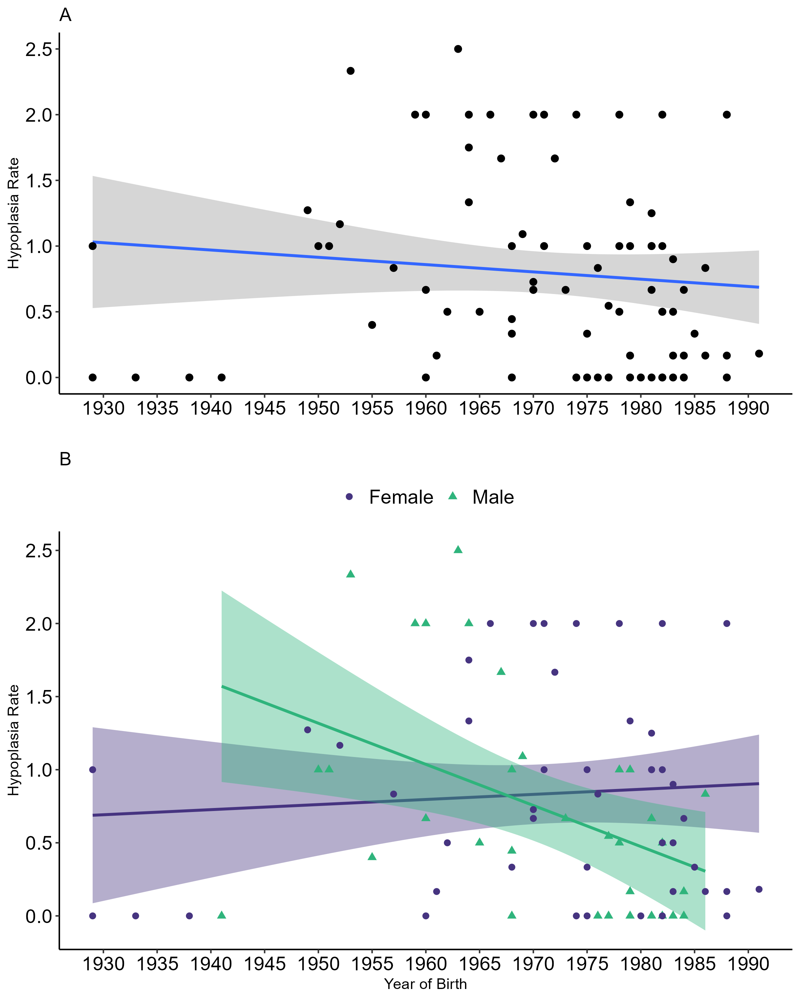
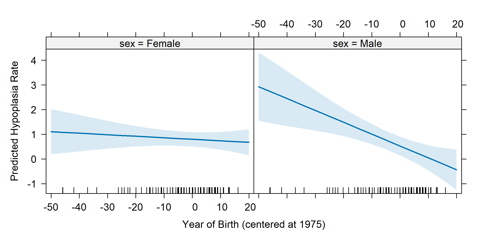
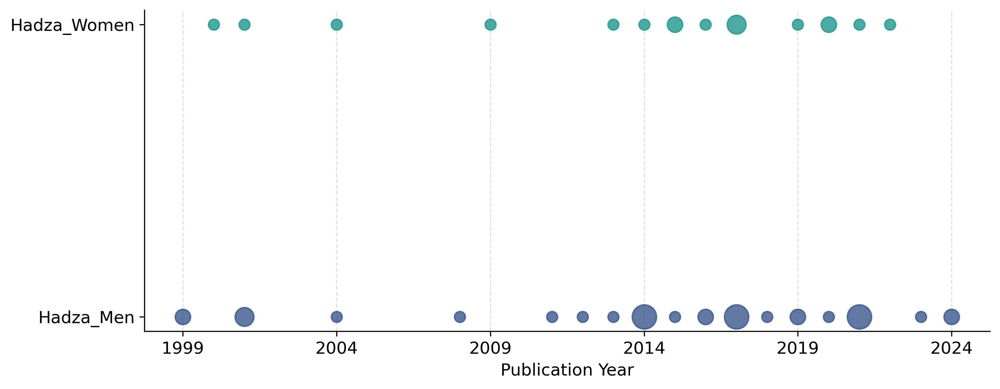
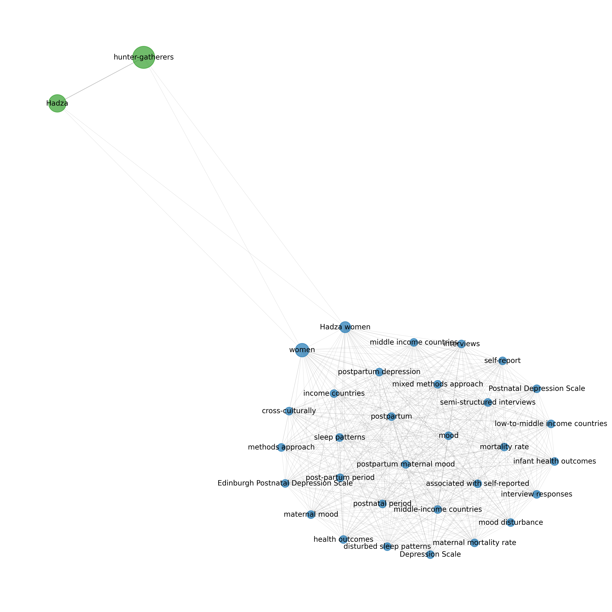
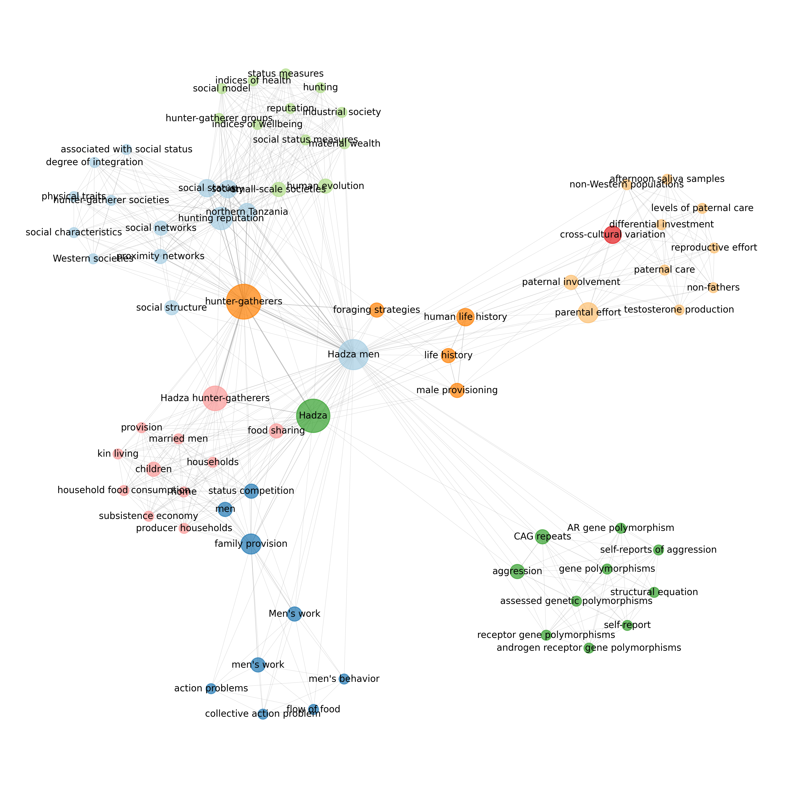

Market Integration Improves Traditional Hadza Male Childhood Health with no Effect on Females
Executive Summary
Problem: Understanding how market integration affects health in hunter-gatherer populations requires long-term data that human biology methods alone cannot provide. Contemporary studies of living populations are constrained by researcher lifespans and cannot access developmental health records from decades past. Meanwhile, bioarchaeological methods that can reach across time have not been applied to living populations with rich longitudinal ethnographic data, leaving a methodological gap in our understanding of how economic transitions shape health.
Approach: This study applied a bioarchaeological technique – linear enamel hypoplasia (LEH) assessment – to a living population for the first time, using dental casts of the anterior maxillary dentition collected from 81 bush-living Hadza hunter-gatherers of Tanzania. LEH defects are permanent, indelible records of physiological stress during tooth development (4.5 months to 5.5 years of age), allowing retrospective analysis of early childhood health across a 62-year birth cohort spanning 1929 to 1991. Time series visualization guided hypothesis generation, which was then tested with a linear mixed-effects model (LMM) and confirmed with Bayesian analysis (brms). A bibliometric analysis of published Hadza research provided contextual evidence for the mechanisms driving the observed patterns.
Insights: Male childhood health improved significantly after the mid-1970s – a turning point that coincides with the arrival of researchers and tourists bringing goods and currency to remote bush camps, initiating a form of remote market integration not previously studied. Female childhood health remained flat across the entire observation period. The significant interaction between birth year and sex (beta = -0.04, p = 0.02) was robust to outlier removal and confirmed by Bayesian analysis. Bibliometric analysis revealed that published Hadza research has historically prioritized men’s roles and activities, and the tourism industry reinforces this external valuation of male labor – a pattern that may have translated into differential resource access benefitting male children.
Significance: Market integration research in hunter-gatherer populations has focused almost exclusively on the transition to sedentism and village life. This study demonstrates that health impacts from market forces appear even in remote populations with no direct market access, and that the effects are gendered in ways that are not predicted by traditional explanations (female neglect, differential medical access, or direct parental preferencing). The methodological contribution – applying LEH to a living population – opens a new avenue for longitudinal health research in groups with existing ethnographic records.
Key Findings
- Male hypoplasia rates declined 71% after 1975 (from 1.13 to 0.33 defects per tooth); female rates declined only 23% (from 0.95 to 0.73), with no statistically significant trend over time.
- A linear mixed-effects model confirmed a significant birth year by sex interaction (beta = -0.04, SE = 0.02, p = 0.02), robust across three outlier sensitivity analyses.
- Bayesian confirmation (brms) yielded a consistent posterior mean for the interaction (-0.04, 95% CI: -0.06 to -0.02), with all Rhat values at 1 indicating good convergence.
- The 1975 turning point coincides with increased researcher and tourist activity in bush camps, consistent with the onset of remote market integration.
- Bibliometric analysis showed Hadza men have been the primary research focus for decades, with tourism reinforcing external signals that men’s activities have higher economic value – a pattern that may have indirectly shaped childhood health trajectories.
Berbesque, J. C., & Hoover, K. C. (2025). Market Integration Improves Traditional Hadza Male Childhood Health with no Effect on Females. The Journal of Development Studies, 1–18. DOI: 10.1080/00220388.2025.2555188
Research Question
Can a bioarchaeological method – linear enamel hypoplasia assessment – be applied to a living population to extend the temporal window for studying childhood developmental stress, and what do long-term health trends reveal about the effects of remote market integration on the Hadza?
Research Answers
The sample and the biomarker
The Hadza are a small-scale hunter-gatherer society living around Lake Eyasi in northern Tanzania. Roughly 150 individuals maintain traditional foraging lifestyles in remote mobile bush camps; the remaining 85% live in sedentary villages with varying degrees of market integration. Data were collected in 2007 and 2009 from the 81 adults (33 men, 48 women) in remote camps who obtained approximately 90% of their daily calories from foraging.
Linear enamel hypoplasias (LEH) are permanent horizontal grooves or pits in dental enamel that form when physiological stress disrupts tooth development. Because the anterior maxillary teeth (central incisors, lateral incisors, canines) develop between 4.5 months and 5.5 years of age, defect counts on these teeth provide a retrospective record of early childhood health. A hypoplasia rate was calculated as total defects divided by total teeth observed, standardized using a tooth offset (log[totalTeeth/12]) to account for variation in teeth available.
Childhood health trends across 62 years
Figure 1. Hypoplasia rate by birth year. (A) All individuals with linear regression and 95% confidence interval. (B) By sex with linear regression and 95% confidence intervals.

Interpretation: The full sample shows a stable hypoplasia rate across the birth cohort, averaging approximately one defect per tooth (Figure 1A). When the data are disaggregated by sex (Figure 1B), a divergence emerges: female rates remain flat while male rates decline steadily, crossing the female line around 1968 and stabilizing below 0.5 after 1975. The pattern is not visible in the aggregate view, underscoring the importance of sex-disaggregated analysis.
Linear mixed-effects model
The LMM modeled hypoplasia rate as a function of birth year (centered at 1975) and sex, with a random intercept for individuals and a tooth offset to standardize for varying numbers of teeth observed. Significance was tested with lmerTest; effect sizes were estimated with the effectsize package.
Figure 2. Predicted hypoplasia rates by birth year and sex from the linear mixed-effects model.

Interpretation: The model confirmed a significant interaction between birth year and sex (beta = -0.04, SE = 0.02, p = 0.02). The estimated hypoplasia rate for females at 1975 (the intercept) was 1.22; the estimated male rate was 0.95. The negative interaction coefficient indicates that male rates declined significantly faster over time than female rates. The conditional R-squared was high (0.84), indicating good overall model fit when random effects are included; the marginal R-squared was lower (0.12), reflecting that year of birth and sex account for a modest share of individual-level variation – the remainder is attributable to unmeasured factors including individual health history and diet.
Bayesian confirmation
A Bayesian fixed-effects model (brms) was used to confirm the LMM findings. Initial attempts to fit a random-intercept Bayesian model encountered convergence issues and a likelihood ratio test showed no significant difference between models with and without the random intercept (chi-squared = 0.46, df = 1, p = 0.5), so the final brms model used fixed effects only. Weakly informative normal priors were derived from LMM standard errors; a half-normal prior (mean = 0, SD = 0.2) was used for the residual standard deviation. The model was run with 4 chains, 10,000 iterations, and 5,000 warm-up draws.
The brms posterior mean for the interaction was -0.04 (95% CI: -0.06 to -0.02), consistent with the LMM. All Rhat values were exactly 1.00 and effective sample sizes were all above 1,500, indicating good convergence and efficient sampling. Trace plots showed intermingling and stationarity across all four chains; autocorrelation plots showed a sharp decline to near zero within 1–2 lags. The posterior residual standard deviation (sigma = 0.88) was larger than the LMM residual SD (0.42), reflecting the absence of the random intercept in the Bayesian model. Posterior predictive checks showed the model adequately captured the central tendency of the data (observed mean 0.71 fell within the predicted distribution) but smoothed over the bimodal distribution of hypoplasia rates – a primary peak at zero driven by males born after 1975, and a secondary peak around two driven by females and older males. The bimodality of the random effects distribution is itself informative: it is driven by a subgroup of males born before 1975 with elevated baseline hypoplasia rates, consistent with the main finding that early childhood health improved specifically in males born after the market integration turning point.
| Effect | LMM Estimate | LMM p | brms Posterior Mean | brms 95% CI |
|---|---|---|---|---|
| Intercept (Female, 1975) | 1.22 | <0.001 | 1.22 | 1.02 – 1.43 |
| Year of birth | -0.01 | 0.51 | -0.01 | -0.02 – 0.01 |
| Male | -0.27 | 0.26 | -0.25 | -0.56 – 0.03 |
| Year x Male interaction | -0.04 | 0.02 | -0.04 | -0.06 – -0.02 |
Interpretation: Both models identify the same pattern: birth year is not a significant predictor of hypoplasia rate for females, but the interaction term confirms that male rates declined significantly over time relative to female rates. The consistency across frequentist and Bayesian approaches strengthens confidence that the trend is real rather than an artifact of modeling choices.
What explains the turning point?
The 1975 turning point in male childhood health coincides with increasing visits to remote bush camps by researchers and tourists offering goods and currency in exchange for services – the onset of what this study terms remote market integration. Traditional explanations for sex-based health disparities do not apply to the bush-living Hadza: the missing women hypothesis is not supported by Tanzanian sex ratios; differential medical access does not apply (bush camps had no clinical access until 2018); educational benefits from school meals would not affect children under 5.5; and decades of observation have found no evidence of preferential parental treatment by sex.
The bibliometric analysis provides contextual evidence for the mechanism. Research on the Hadza has historically prioritized men’s roles and activities; tourism reinforces this by offering hunting experiences with men rather than foraging with women. Men earn wages from tourist activities and exchange them for market goods, potentially increasing resource availability for male children through the same-sex learning and activity structures documented in Hadza childhood.
Figure 3. Timeline of Hadza research publications by sex focus, 1999–2024.

Interpretation: Publications focused on Hadza men outnumber those focused on women through approximately 2015, when a cohort of female researchers entering the field shifted the balance. The external signal – reinforced by research attention and tourist economics – that men’s activities have higher value than women’s may have created subtle wealth disparities that differentially benefitted male children during the period captured by this study.
Research bias in the Hadza literature
Keyword co-occurrence networks built from publication titles and abstracts reveal structurally distinct research traditions for Hadza men and women. These figures were originally published as supplemental materials; they are presented here as the primary visualization of the bibliometric argument because the network structure is central to the interpretation of the health findings.
Figure 4. Keyword co-occurrence network for publications focused on Hadza women.

Interpretation: The women’s network is dense and tightly interconnected (density = 0.89, modularity = 0.03), with 33 nodes and 470 edges. Despite the smaller node count, the average degree (28.48) is nearly double that of the men’s network, indicating that research on Hadza women clusters around a highly integrated set of topics. The dominant themes are postpartum health, cortisol and stress, social relationships, and demography – health and reproduction framed through a lens of women’s vulnerability and biological outcomes.
Figure 5. Keyword co-occurrence network for publications focused on Hadza men.

Interpretation: The men’s network is sparse but modular (density = 0.21, modularity = 0.46), with 73 nodes and 564 edges organized into distinct thematic clusters: hunting reputation and status, genetics and aggression, paternal provisioning, subsistence skills, and wealth. The greater number of nodes reflects a longer research history and broader collaborative networks. The modularity signals distinct research programs – men’s biology, men’s economics, men’s social status – that have developed largely independently. Together the two networks show that decades of Hadza research have framed men as economic and social actors and women primarily through health and reproductive outcomes, an asymmetry that external market forces (researcher attention, tourist economics) have reinforced and that this study argues may have influenced the childhood health trends observed.
Next Steps
The methodology introduced here – applying LEH to living populations with longitudinal ethnographic records – is broadly transferable. Comparative data collection on other indigenous populations that have undergone market integration over the past two to three generations would allow re-examination of health impacts from subsistence and economic transitions at a scale not previously feasible. For the Hadza specifically, documentation of father-son interactions in early childhood among contemporary bush-living Hadza would provide direct evidence to evaluate the same-sex learning pathway proposed here. Larger multi-population datasets would also enable re-examination of the sex-based patterns identified here with greater statistical power.
Study Design
Scripts have been reformatted to current conventions (native pipe, = assignment, no deprecated syntax), figures regenerated as PNGs, and a reproducible environment added (renv, requirements.txt). No analytical changes were made from the published paper.
Data Source: Dental cast data were collected by J. Colette Berbesque in 2007 and 2009 from 101 adult Hadza living in six remote mobile bush camps around Lake Eyasi, Arusha region, Tanzania. Research was approved by Florida State University IRB (IRB00000446) and the Tanzania Commission for Science and Technology (COSTECH). Verbal informed consent was obtained. The final analytical sample after exclusions was 81 individuals. Bibliometric data were retrieved from dimensions.ai using search terms documented in Berbesque & Hoover (2025), Section 2.2.5.
Data Handling: Three individuals were excluded for dental wear exceeding 50% of the crown surface. Eight individuals under 18 were removed. One data entry error (age recorded as “15 5” rather than 15.5) was corrected. Year of birth was taken from long-standing Hadza demographic records (N. Blurton-Jones, F. W. Marlowe); where missing, it was estimated as collection year minus age. Hypoplasia rate was calculated as total LEH count divided by total anterior teeth observed. A tooth offset (log[totalTeeth/12]) was used to standardize for individuals with varying numbers of teeth.
Analytical Approach:
- Exploratory data visualization: time series scatterplots of hypoplasia rate by birth year, overall and by sex, to identify patterns and generate the study hypothesis.
- Descriptive statistics: means, medians, and standard deviations by sex; Welch’s t-test and Kruskal-Wallis test for sex differences in hypoplasia count and rate.
- Linear mixed-effects model (lme4): hypoplasia rate ~ birth year (centered 1975) * sex + offset(tooth offset) + (1|individual). Effect sizes via effectsize; significance via lmerTest; interaction visualization via effects.
- Sensitivity analysis: model re-run three times, removing each of three outliers individually; interaction remained significant in all cases.
- Bayesian confirmation (brms): fixed-effects model with weakly informative priors derived from LMM standard errors; 4 chains, 10,000 iterations; convergence assessed via Rhat and ESS.
- Bibliometric analysis (R: bibliometrix, ggplot2; Python: NetworkX, matplotlib): publication counts and keyword co-occurrence networks for Hadza men and women research using data from dimensions.ai.
Project Resources
Repository: Hadza-Market-Integration
Data:
data2-hadza-depersonalized.csv– depersonalized LEH data; personal identifiers removed from original field collection datasetdata3-hadza-analysis.csv– analytical dataset derived from depersonalized data; includes computed variables (hypoplasia rate, tooth offset, year of birth)
Code:
revised-analysis.R– consolidated R script for data preparation, time series visualization, LMM, sensitivity analysis, and Bayesian modelrevised-bibmet.ipynb– Jupyter notebook for bibliometric network analysis; see paper methods (Section 2.2.5) for data sourcing details1-depersonalize.qmd– original depersonalization script; retained as publication artifact2-explore.qmd– original exploratory analysis script; retained as publication artifact3-analysis.qmd– original analysis script; retained as publication artifact4-bibmet.qmd– original bibliometric script; retained as publication artifact
Project Artifacts:
- Figures (n=5):
revised-fig1.png,revised-fig2.png,revised-fig3.png,revised-fig4-women-network.png,revised-fig5-men-network.png - Preprint: retained as publication artifact
Environment:
renv.lockandrenv/– restore R environment withrenv::restore()requirements.txt– install Python dependencies withpip install -r requirements.txt
License:
- Code and scripts © Kara C. Hoover, licensed under the MIT License.
- Data, figures, and written content © Kara C. Hoover, licensed under CC BY-NC-ND 4.0.
Tools & Technologies
Languages: R | Python
Tools: RStudio | Jupyter
Packages: lme4 | lmerTest | effectsize | effects | MuMIn | brms | bayesplot | ggplot2 | cowplot | dplyr | psych | car | lattice | bibliometrix | readxl | janitor | NetworkX | matplotlib
Expertise
Domain Expertise: bioarchaeology | biological anthropology | hunter-gatherer health | developmental stress biomarkers | market integration | gender health disparities | bibliometrics | network analysis
Transferable Expertise: Demonstrates ability to bridge methodological traditions – adapting a technique from one field (bioarchaeology) to address a question in another (human biology and development economics) – and to triangulate findings across frequentist, Bayesian, and bibliometric approaches. The project also illustrates ethical data stewardship in research with indigenous communities, including depersonalization protocols and IRB-compliant data sharing.